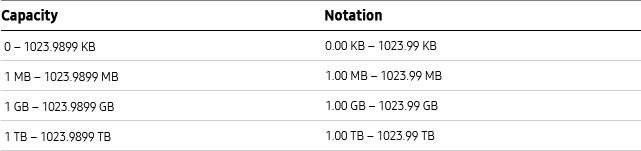

Data Capacity
Definition
Usage
Definition
Use the Data Capacity function to present data storage capacity.
Usage
Display a value up to the second decimal point, rounding off the numbers to three decimal places and adding a unit after the number.
- Units: KB, MB, GB, TB
